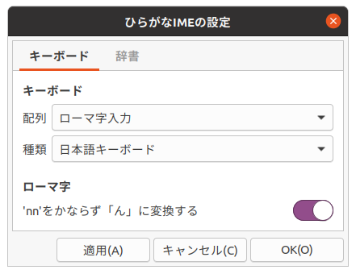
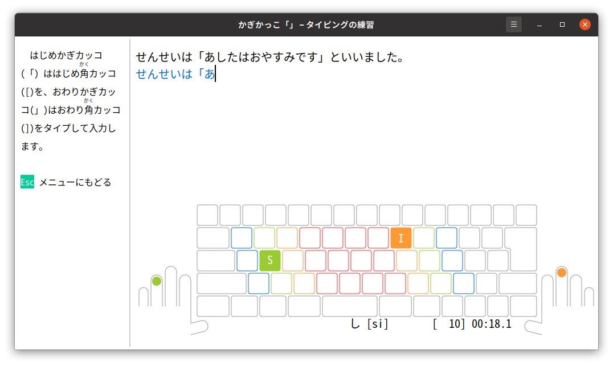

ひらがなIMEとの連動
「タイピングの練習」は、「ひらがなIME」で設定したキーボード配列をつかって練習できるようになっています。
使用するキーボード配列は「ひらがなIMEの設定」で変更できます。

漢字のタイピングの練習は、学年ごとにわかれています。「ひらがなIME」の漢字辞書も練習する学年にあわせて設定してください。

ローマ字入力 vs かな入力
日本語キーボードでローマ字入力

英語(US)キーボードでかな入力（ニュースティックニー配列）

小学生の段階では、１学年すすむごとに毎分25キーくらいおおくうてるようになることをめざしています。
せんせいは「あしたはおやすみです」といいました。
この例文は、ローマ字入力だと39回キーをおします。かな入力であれば25回ほどですみます。シフトキーをかぞえるか、かぞえないかについては、議論がわかれています。いずれにしても、ローマ字入力で、はやくうてるようになるまで練習するのはたいへんです。
しかし、現行のJIS規格のかな配列には問題がおおいのです。JISも1986年にいちどあたらしいかな配列を発表したことがあります。学校でもあたらしいかな配列でおしえることが検討されました。けれども、そのときのあたらしいかな配列が普及することはありませんでした。当時はパソコンはひじょうに高価で、じぶんのパソコンをもっている小学生はほとんどいなかったのです。
いまは小学生のときからキーボードを練習するようになりました。パソコンをとてもやすくつくれるようになったためです。どんなキーボードの配列がよいか、みなさんもかんがえてみてください。